欢迎来到草帽Boy的Leetcode笔记

本站记录一些本人使用Rust的刷题心得,大爷如果您觉得对您有用 ↓ 可以打赏哦!
本项目,目标 每天至少完成一道 leetcode,至少持续 一年,欢迎各位监督。
- 2020-06.25 -- 两数之和(easy)
- 2020-06.26 -- 三数之和(medium)
- 2020-06.27 -- 反转整数(easy)
- 2020-06.28 -- 寻找两个正序数组的中位数(hard)
- 2020-06-29 -- 移除元素(easy)
- 2020-06-30 -- 实现 strStr(表面上easy kmp算法)
- 2020-07-01 -- 删除链表的倒数第N个节点 (medium)
- 2020-07-02 -- 删除排序数组中的重复项 (easy)
- 2020-07-03 -- 将有序数组转换为二叉搜索 (easy)
- 2020-07-04 -- 最长有效括号(hard)
- 2020-07-05 第70题 爬楼梯(easy)
- 2020-07-06 第198题 打家劫舍(easy)
- 2020-07-07 第120题 三角形最小路径和(medium)
- 2020-07-07 第155题 最小栈(easy)
分类整理
微信打赏 :

微信号:eismc_2 👌
ps : 代码可以在线运行调试哦!
本网站托全管于 github
本网站使用mdBook生成,所有源代码,都是在Mozilla Public License v2.0下发布的

动态规划
动态规划的的四个解题步骤是：
- 定义子问题
- 写出子问题的递推关系
- 确定 DP 数组的计算顺序
- 空间优化（可选）
题目
双指针
-
入门题目:
-
进阶题目
数据结构
Leetcode 第9题 - 回文数(easy)
题目:判断一个整数是否是回文数。回文数是指正序（从左向右）和倒序（从右向左）读都是一样的整数。
示例 1:
输入: 121
输出: true
示例 2:
输入: -121
输出: false
解释: 从左向右读, 为 -121 。 从右向左读, 为 121- 。因此它不是一个回文数。
示例 3:
输入: 10
输出: false
解释: 从右向左读, 为 01 。因此它不是一个回文数。
编码实现思路
Leetocde模板代码:
#![allow(unused_variables)] fn main() { impl Solution { pub fn is_palindrome(x: i32) -> bool { } } }
实现思路
这里我们先要熟悉,一个基本操作 一个数数 取个位只需要取余( % 10)
101 % 10 = 1
如果要把每一位 取出来 就需要 循环 /10 %10
pub fn takenum(x: i32) { let mut tmp = x; while tmp >1 { print!("{} ",tmp%10); tmp = tmp /10; } println!(); } fn main() { takenum(543); }
leetcode给定的是 一个 i32数字,我们的思路是这样的 把 一个数字 比如 123 -> 反转 成 321 如果判断反转后的数字,和原数字相等 那么 就是回文数字。
example : 121 ->
tmp1 = 取个位1 * 10 = 10
tmp1 += 取十位2 * 10 = (tmp1 + 2) * 10 = (10 +2) * 10 =120
tmp1 += 取百位1 * 10 =(tmp1 + 1) * 10 = (120 +2) * 10 =1210
最后 tmp1 /10 = 121
反转一个整数
example : 123 -> 321 121->121
pub fn reverse(x: i32) -> i32{ let mut tmp = x; let mut tmp1 = 0; while (tmp >= 1) { // 123 第一次 temp1 30 tmp 12 -> 第二次 320 1 -> 第三次 3210 0.1 小于1 跳出循环 这样就完成了颠倒数字 tmp1 = (tmp1 + tmp % 10 )* 10; tmp = tmp / 10; } tmp1 /10 } fn main() { println!("{}",reverse(123)); }
回文数字完整代码
有了上面的反转,只需要判断下 反转后的代码是否与原文一致即可,但是下面代码 还对 某些特殊的数字 比如负数、能被10整除的数、0~10的数字 直接做出判断、做了一些特殊条件的处理。
pub fn is_palindrome(x: i32) -> bool { // [0,10)之间的数 都为 true if(x < 10 && x >=0){return true;} //如果 -开头的 和 100、1000 这样的直接排除 if(x < 0 || x % 10 ==0 ){ return false } let mut tmp = x; let mut tmp1 = 0; while (tmp >= 1) { //将数字颠倒 123 先取出 3* 10 在把tmp更新成 12 //这里加 if 是因为 如果是10位数 最后一次个位数再乘以10 -> 11位数 就超出 i32 的最大值了 就会报错! if tmp < 10 { tmp1 = (tmp1 + tmp % 10 )} else{ // 123 第一次 temp1 30 tmp 12 -> 第二次 320 1 -> 第三次 3210 0.1 小于1 跳出循环 这样就完成了颠倒数字 tmp1 = (tmp1 + tmp % 10 )* 10; } tmp = tmp / 10; } //123 -> 321 不相等 121 -> 121 相等 if tmp1 == x { return true; } return false; } //测试代码 fn main() { println!("{}",is_palindrome(123)); println!("{}",is_palindrome(121)); println!("{}",is_palindrome(1000000001)); }
提交结果：

ps:点击编辑器右上角 图标可运行代码哦!
Leetcode 第1题 两数之和(easy)
给定一个整数数组 nums 和一个目标值 target，请你在该数组中找出和为目标值的那 两个 整数，并返回他们的数组下标。
你可以假设每种输入只会对应一个答案。但是，数组中同一个元素不能使用两遍。
示例:
给定 nums = [2, 7, 11, 15], target = 9
因为 nums[0] + nums[1] = 2 + 7 = 9 所以返回 [0, 1]
方法(一)：暴力解法
最简单的思路是 for 循环 两层 这样 所有可能的组合 。
时间复杂度：$O_{(n^{2})}$
空间复杂度：$$O(1)$$
举个例子 [1,2,3] 就是 循环 $3^2$ 9次。
| loop1/loop2 | 1 | 3 | 3 |
|---|---|---|---|
| 1 | [1,1] | [1,2] | [1,3] |
| 2 | [2,1] | [2,2] | [2,3] |
| 3 | [3,1] | [3,2] | [3,3] |
pub fn two_sum(nums: Vec<i32>, target: i32) -> Vec<i32> { let mut res =vec![]; for i in 0..nums.len() { for j in 0..nums.len() { if i == j { continue;} if nums[i] + nums[j] == target{ res.push(i as i32); res.push(j as i32); return Vec; } } } res }
Hash表解法
从小学数学的角度 假设已知 矩阵 b= [ 1,2,7 ] 矩阵c = [9,9,9] 定义 a + b = c ,那么按照矩阵的加法运算.
a = c - b = [9,9,9] -[1,2,7] = [8,7,2] ，按照题目的定义 我们要求一个数 即满足 a + b = c, 同时 这个数 既属于矩阵a的子集 又属于 矩阵b的子集 ,那么 就可以表示为 $b{\bigcap}a $ 那么把[1,2,7] $\bigcap$ [8,7,2] 那么 答案就是 7 和 2 但是 题目说一个元素不能被使用2次,那么如果是取 b = 2 那么 a = 7 如果 取 b = 7 那么 a = 2 按照for 循环顺序,2 在前 所以 会去到 b =2 , a = 7。
综上分析：我们在每次循环 都把当前数的 另一半使得 a + b = c 的数算出来, 然后存起来,下次循环到下一个数的时候，去找下有没有记录,有的话就就直接返回结果。
那用什么存呢? 想想计算机的数据结构无非就那么几种,数组,栈,链表、HashMap 啊
-
如果用数组,那么每次循环前就判断下,当前这个数是否在数组里被记录过了 可以用contains。,时间复杂度O(n!)、另外链表的复杂度也是一样的,用数组、链表 其实也就变成了暴力解法。
-
红黑树,时间复杂度(O(n$log_n$)) 红黑树相对快点,但还不是最高效的。
-
Hash表,hash表可以直接O(1)的复杂度,可以把 a 或者 b 当做key value 随便放什么值, 只要能在表里找到的就是能解的。
| c = 9 | key | value,数组中的索引 |
|---|---|---|
| 模拟hashmap | ||
| b_1 = 1 map.get(1) = null | 8 | 0 |
| b_1 = 2 map.get(2) = null | 7 | 1 |
| b_1 = 7 map.get(7) = 1,找到返回索引 0 和 2 | 2 |
综上总结:使用 Hash 表的 复杂度为O(1),我们把 ,如果我们 给定 a = 1,c =8 那么 我们 只要在 hash 表的key里存 b = c - a = 7 那么 下次数组遍历到 7 然后去hash 表get(7) 有值,就说明 配对成功了 ，我们可以把hash表看作一个交友网站,你把你想要找的另一半 要求给记下了给到它,下次人家只要从这个等级的记录里面配对就好了。
use std::collections::HashMap; impl Solution { pub fn two_sum(nums: Vec<i32>, target: i32) -> Vec<i32> { let mut map: HashMap<i32, i32> = HashMap::new(); for (i, v) in nums.iter().enumerate() { match map.get(v) { //匹配到 直接返回 Some(&index) => { return vec![index, i as i32] } //匹配不到 把当前数对应的解b = c -a 插入 value _ => { map.insert(target-v, i as i32); } } } vec![] } }
就暴力算法,在对比了 其他几门语言 发现性能还是比较出类拔萃的,基于同样逻辑用C实现的暴力算法 执行速度上 也比Rust满很多 不知道为什么 python 更是没法比相差 100多倍的,Go也是比较出色的能和,保Rust持同一个水平。
Leetcode 第15题 - 三数之和(medium)
给你一个包含 n 个整数的数组 nums，判断 nums 中是否存在三个元素 a，b，c ，使得 a + b + c = 0 ？请你找出所有满足条件且不重复的三元组。
注意：答案中不可以包含重复的三元组。
示例
给定数组 nums = [-1, 0, 1, 2, -1, -4]，
满足要求的三元组集合为： [ [-1, 0, 1], [-1, -1, 2] ]
解题思路
这道题目和求2树之和类似,多了一个数。那么最自然的想法 也是写算法中常用的的思维能不能把问题规模变小。
题目中 给出了注意事项 **答案中不可以包含重复的三元组。**那这是什么意思呢 ?
[-1, 0, 1, 2, -1, -4] 我们把解写成索引形式 ->
[0, 1, 2] 对应 -1 + 0 + 1 =0
[0, 3, 4] 对应 -1 + 2 + -1 =0
[1, 2, 4] 对应 0 + 1 + -1 = 0
但是你可以看到 其实 第1组 和 第3组只是数的位置不一样 里面的数字是一样的,题目就是想说明这一点,所以 我们在对得出结果后还要对相同的组进行去重。
a + b + c = 0 是不是和 2数之和很相似,如果稍微改动下 变成 a + b = -c ,不就变成了2数之和了吗,那么 我们只要一层for 循环 来遍历 不同的c 就好了。 [-1, 0, 1, 2, -1, -4] 我们可以把 数组里面 的每一个数 当做 c 然后再去找 a 和 b。
暴力解法
时间复杂度： $$O_{(n^{3})}$$
空间复杂度：$$O(1)$$
暴力解法 很简单 但是我们要注意的点
- 第一层循环i 从0 开始 第二层循环j 从i 开始 第三层循环m 从j 开始,为什么呢想像小时候的乘法口诀表 ?
- 如果数组中有重复的元素 比如上面的 -1 ,我们需要去下重,否则 就会有2个同一答案 比如 [-1, 0, 1] [0, 1, -1]
你可以看到 我们一般 就只需要背一般剩余一半,只不过是镜像反转了 (i)1* (j)2 和 (i)2*(j)1是一样的。
下面 我们先不考虑第二点,把最简单的 一个暴力算法写出可运行的结果。
//---->点击右上角 编辑调试代码 use std::collections::HashMap; pub fn three_sum(nums: Vec<i32>) -> Vec<Vec<i32>> { let mut res =vec![]; for i in 0..nums.len() { for j in i+1..nums.len() { for m in j+1..nums.len() { if nums[i] + nums[j] + nums[m] == 0{ let mut tmp =vec![]; tmp.push( nums[i]); tmp.push(nums[j]); tmp.push(nums[m]); res.push(tmp); } } } } res } fn main() { let mut a1 =vec![-1, 0, 1, 2, -1, -4]; println!("{:?}",three_sum(a1)); }
最后的结果 输出 :
[[-1, 0, 1], [-1, 2, -1], [0, 1, -1]]
我们可以在 循环前先对数组排序,然后每层都去判断前一个数字是否和当前相同 相同 就跳过。
use std::collections::HashMap; pub fn three_sum(nums: Vec<i32>) -> Vec<Vec<i32>> { let mut nums = nums; nums.sort(); let mut res =vec![]; let mut flag = None; for i in 0..nums.len() { //如果和前一个相同 就跳过 if { flag != None && flag == Some(nums[i])}{continue;} flag = Some(nums[i]); let mut flag1 = None; for j in i+1..nums.len() { //如果和前一个相同 就跳过 if flag1 != None && flag1 == Some(nums[j]) { continue } flag1 = Some(nums[j]); let mut flag2 = None; for m in j+1..nums.len() { //如果和前一个相同 就跳过 if flag2 != None && flag2 == Some(nums[m]) { continue } flag2 = Some(nums[m]); if nums[i] + nums[j] + nums[m] == 0{ let mut tmp =vec![]; tmp.push( nums[i]); tmp.push(nums[j]); tmp.push(nums[m]); res.push(tmp); } } } } res } fn main() { let mut a1 =vec![0, 0, 0, 0]; println!("{:?}",three_sum(a1)); let mut a1 =vec![-1, 0, 1, 2, -1, -4]; println!("{:?}",three_sum(a1)); }
于是我们 很高兴的去leetcode 提交答案,但是果然 它 就超时了,毕竟现在 复杂度是$O^{3}$级别的。
排序 + HashMap
a + b + c = 0 我们使 b + c = d 那么 a + d = 0 a = -d 能使 a 为 0 的 d 应该 只存在唯一一个。
但是 能使 b + c = d 的可能有很多解。
我们 循环是 先进行排序,把前一个和当前相同的 a 值过跳过, 因为 同一个 a 的出来的 是相同的 b 和 c 所以没有意义。
接下来 我们 满足 b + c = d 的解可能是有 多组的,同时 我们还要注意 一点 b + c 和 c + b 也是同一组解,所以遇到这种情况 我们也要过滤掉。我们还需要注意 当 a 被用掉后 b 和 c 也不能用 a 的值 ,
因为本质上 a + b + c =0 可以设 a =b 这样 就可以变成 b + a + c =0 这样 也是重复的解,只是位置换了。
我们 把 先前的 2数之和稍微改动下,就能使用了。
use std::collections::HashMap; pub fn three_sum(nums: Vec<i32>) -> Vec<Vec<i32>> { let mut i = 0; let mut nums = nums; //排序 nums.sort(); let mut flag = None; let mut res:Vec<Vec<i32>> =vec![]; while(i<nums.len()){ if flag != None && Some(nums[i]) == flag{i+=1;continue;} flag = Some(nums[i]); let mut map: HashMap<i32, usize> = HashMap::new(); let mut flag1:Option<i32> = None; for (j, v) in nums.iter().enumerate() { if j < i +1 {continue;} if flag1 != None && Some(*v) == flag1 {continue;} match map.get(v) { //匹配到 直接返回 Some(&index) => { res.push(vec![nums[i],nums[index], nums[j] ]); flag1 = Some(*v); } //匹配不到 把当前数对应的解b = c -a 插入 value _ => { map.insert(-nums[i] - v, j ); } } } i+=1; } res } fn main() { let mut a1 =vec![0, 0, 0, 0]; println!("{:?}",three_sum(a1)); let mut a1 =vec![-1, 0, 1, 2, -1, -4]; println!("{:?}",three_sum(a1)); }
最终 我们 靠自前面实现的2树相加 实现了,但是 现在时间复杂度 还是 接近$O^n$ ,效率还不是最高。
排序 + 双指针
前面 我们实现了 通过hashMap 实现了2数之和,但 执行时间 还是有点慢,下面 尝试用双指针来看看会不会有更好的性能。
首先明确的就是 双指针的思路 和 上面一种做法是一样的, a + b + c = 0 转换成 a + b = - c 然后定义2个指针,代表了 a 和 c 的取值,双指针的套路就是一般先要进行排序.然后 就是 就是一个while 左边小于右边就循环,
双指针 我们分别 指向一个左边的最小的数,和一个右边最大的数。
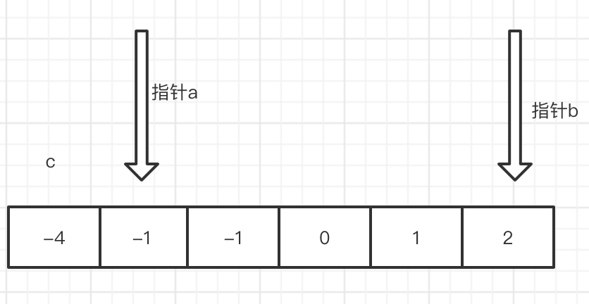从图上我们可以观察处,
当a 指针 往 右移动 a + b 会变大
当 b 指针 往 左移 a + b 会变小
也就是说,如果 a + b < -c 你就 移动 指针a,如果 a + b > -c 你就移动 指针b,如果某一次移动 a 或 b后 正好等于了 - c,有点像 夹逼定理吧。
那么可以说 我们找到了那个数,并且 我们不能让指针 碰在一起,也就是 指针a 的索引 > 指针b 的索引,那么 如果我们不设限制的话 当指针 a 超过指针b 后 其实相当于 变成了 a = b 位置颠倒了, 会出现 1 + 3 和 3 + 1 这样本质是一样。
另外要提的一点是,如果 排序后有重复的数字 比如上图的 -1 和 -1 这样 会出现重复的答案 我们需要作以下判断,分完了 开始编写代码把。
我们先 搭了一个基本的框架
#![allow(unused_variables)] fn main() { pub fn three_sum(nums: Vec<i32>) -> Vec<Vec<i32>> { let mut nums = nums; //作下 排序 nums.sort(); //定义 c for pointer_c in 0..nums.len(){ //定义指针a 要比 c 大 let mut pointer_a= pointer_c + 1; //定义指针 b let mut pointer_b =nums.len() -1; //左边的指针小于右边的指针 while(pointer_a < pointer_b ){ } } vec![] } }
接下来我们填充下内容
主要 判断下 a + b > -c 和 a + b < -c 或者 a + b = -c 的几种情况。
#![allow(unused_variables)] fn main() { pub fn three_sum(nums: Vec<i32>) -> Vec<Vec<i32>> { let mut nums = nums; //作下 排序 nums.sort(); let mut res =vec![]; //定义 c for pointer_c in 0..nums.len(){ //定义指针a 要比 c 大 let mut pointer_a= pointer_c+1; //定义指针 b let mut pointer_b =nums.len() -1; //左边的指针小于右边的指针 while(pointer_a < pointer_b ){ //如果 a + b < -c 那么 往右移动a 指针 a + b 变大 if nums[pointer_a] + nums[pointer_b] < -nums[pointer_c] { pointer_a += 1; //如果 a + b > -c 那么 往左移动b 指针 a + b 变小 }else if nums[pointer_a] + nums[pointer_b] > -nums[pointer_c]{ pointer_b -= 1; //如果 a + b = -c 找到了 }else if nums[pointer_a] + nums[pointer_b] == -nums[pointer_c]{ res.push(vec![nums[pointer_a],nums[pointer_b],nums[pointer_c]]); } } } res } }
在 实现的过程中 我遗漏了一点分析,当 a + b = -c 是 能使 a + b = -c 的 a + b 的解可能是有多个的。当我们找到第一组后,该怎么 移动指针 继续寻找 后面可能的解呢? 无非 要么移动 a 要么移动 b 要么 a 和 b 都移动,仔细一想 a 唯一对应 一个 b 反过来 b 也是,也就是 a找到了它唯一的伴侣 b也找到了它唯一的伴侣,那么 他们就没必要在找小三了。那么 只要 a 和 b 的指针 + 1 即可。
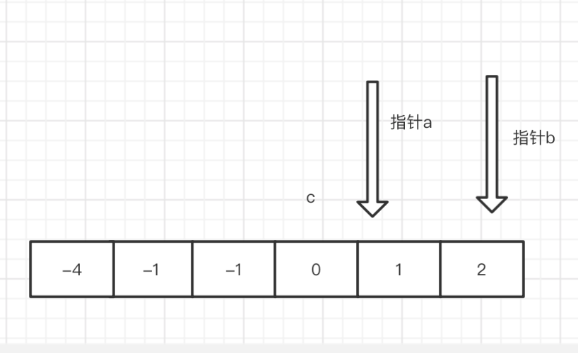我们 还需要 注意 一点 就是 c 最大 能取到 的位置,上图 是c 能取到 的最大位置了 如果再往右 a 和b 的指针就要重合 了 那就没有意义了。所以 我们判断下 c 最大的index 是 len() -2 。
pub fn three_sum(nums: Vec<i32>) -> Vec<Vec<i32>> { let mut nums = nums; //作下 排序 nums.sort(); let mut res =vec![]; //定义 c for pointer_c in 0..nums.len() -2{ //c的最大界限 nums.len() -2 左闭右开 //定义指针a 要比 c 大 let mut pointer_a= pointer_c + 1; //定义指针 b let mut pointer_b =nums.len() -1; //左边的指针小于右边的指针 while(pointer_a < pointer_b ){ //如果 a + b < -c 那么 右移动a 指针 a + b 变大 if nums[pointer_a] + nums[pointer_b] < -nums[pointer_c] { pointer_a += 1; //如果 a + b > -c 那么 左移动b 指针 a + b 变小 }else if nums[pointer_a] + nums[pointer_b] > -nums[pointer_c]{ pointer_b -= 1; //如果 a + b = -c 找到了 }else if nums[pointer_a] + nums[pointer_b] == -nums[pointer_c]{ res.push(vec![nums[pointer_a],nums[pointer_b],nums[pointer_c]]); pointer_a += 1; pointer_b -= 1; } } } res } fn main() { let mut a1 =vec![-1, 0, 1, 2, -1, -4]; println!("{:?}",three_sum(a1)); // let mut a1 =vec![-1, 0, 1, 2, -1, -4]; // println!("{:?}",three_sum(a1)); }
运行下,上面代码来测试下吧!
当你运行上面代码,发现问题了吧, 有重复的 [0,1,-1] 上面我们提过的,向量元素 如果重复了 比如 上面数组 -1 -1 就重复了, 那就要跳过。
那么 我们 每次判断下,上一个元素是否相同,相同就跳过就好了 代码很简单,我们拿索引和上一个索引做下比较就好啦,但要注意 索引 0 要排除哦。
#![allow(unused_variables)] fn main() { if pointer_c >0 && nums[pointer_c] == nums[pointer_c -1] { continue; } }
到这里 我本以为 我的算法 就完美了 但是 。。。
没错 在leetcode 中
#![allow(unused_variables)] fn main() { let mut a1 =vec![-2,0,0,2,2]; }
我疏忽了 一点 就是 不只是 c 要判断 是否 相邻的有 重复跳过, b 也需要 判断 是否相邻跳过。
否则的话 当我们 确定了 c = -2 那么 a 和 b 在 [0,0,2,2]里面选择 那么 就会产生 2对 一样的,其实了解了 这个原因 和上面一样 每次 都记录下上一组的值,做下 判断就好了。
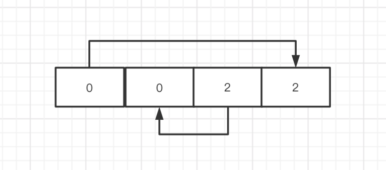我们 每次找到一组的时候 把结果保存下,再下一次找到的时候对比下 值是否相同即可。
#![allow(unused_variables)] fn main() { else if nums[pointer_a] + nums[pointer_b] == -nums[pointer_c]{ //比较上一组 的 a 是否和 这一次的相等 相等就跳过。 if tag1 == Some(nums[pointer_a]) { pointer_a += 1;pointer_b -= 1; continue;} //每次保存下a的值 tag1 = Some(nums[pointer_a]); .... } }
完整代码
pub fn three_sum(nums: Vec<i32>) -> Vec<Vec<i32>> { //为了对付 leetcode 给的 比如像 [] [0] [1,2] 这样的没用数据 if nums.len() < 3 { return vec![];} let mut nums = nums; //作下 排序 nums.sort(); let mut res =vec![]; //定义 c for pointer_c in 0..nums.len() -2{ let mut tag1 = None; if pointer_c >0 && nums[pointer_c] == nums[pointer_c -1] { continue; } //定义指针a 要比 c 大 let mut pointer_a= pointer_c + 1; //定义指针 b let mut pointer_b =nums.len() -1; //左边的指针小于右边的指针 while(pointer_a < pointer_b ){ //如果 a + b < -c 那么 右移动a 指针 a + b 变大 if nums[pointer_a] + nums[pointer_b] < -nums[pointer_c] { pointer_a += 1; //如果 a + b > -c 那么 左移动b 指针 a + b 变小 }else if nums[pointer_a] + nums[pointer_b] > -nums[pointer_c]{ pointer_b -= 1; //如果 a + b = -c 找到了 }else if nums[pointer_a] + nums[pointer_b] == -nums[pointer_c]{ if tag1 == Some(nums[pointer_a]) { pointer_a += 1;pointer_b -= 1; continue;} tag1 = Some(nums[pointer_a]); res.push(vec![nums[pointer_c],nums[pointer_a],nums[pointer_b]]); pointer_a += 1; pointer_b -= 1; } } } res } fn main() { let mut a1 =vec![-2,0,0,2,2]; println!("{:?}",three_sum(a1)); let mut a1 =vec![-1, 0, 1, 2, -1, -4]; println!("{:?}",three_sum(a1)); let mut a1 =vec![0, 0, 0, 0, 0, 0]; println!("{:?}",three_sum(a1)); }
第一次运行的时候 只超越了 30% 多,但 第二次运行后超越了 73% 真是搞不懂,我们算法 已经写的非常简洁了,如果还有什么地方可以优化 我感觉 那就只能在 排序那里优化了。
Leetcode 第7题 - 反转整数(easy)
给出一个 32 位的有符号整数，你需要将这个整数中每位上的数字进行反转。
示例 1:
输入: 123 输出: 321
示例 2:
输入: -123 输出: -321
示例 3:
输入: 120 输出: 21
解题思路
反转整数很简单 ,我们要一次拆解 各个位数 然后每次乘以 10 把上一次加上就好了,如果是负数 我们先把 符号 截取 反转后加上。
我们需要注意的是,32位的数的取值范围是 [−2^31, 2^31 − 1],如果反转后超出 这个值返回0 。
example:
给个 b = 1024 a = 0
第一次 a = (a + b % 10) * 10 = 4 *10 =40 然后更新下 b = 1024 /10 = 102
第二次 a = (a + b % 10) * 10 = (40 + 102 % 10) * 10 = 420 然后更新下 b = 102 /10 = 10
第三次 a = (a + b % 10) *10 = (420 + 10 % 10) * 10 = 4200 然后更新下 b = 10 /10 = 1
第四次 a = (a + b % 1) *10 = (4200 + 1 % 10) * 10 = 4201 结束条件 b=1/10 =0.1 小于 1 条件结束
我们 要注意 在转换过程中,如果数字超出 范围就返回 0 ,为此 我们在 需要把数字转换成 i64 去判断下大小。
全部代码
pub fn reverse(x: i32) -> i32 { let mut tmp; if(x < 0 ){ tmp = -x; }else{ tmp = x; } let mut tmp1 = 0; while (tmp >= 1){ //转换成 i64 去判断是否溢出 let mut tmpcalc = tmp1 as i64 + (tmp % 10) as i64 ; //这里当 分解到最后一位数的时候 就不要再成10了 if tmp >= 10 { tmpcalc*= 10; } //判断下 是否溢出 if tmpcalc > 2147483648 || tmpcalc < -2147483648 { return 0;} tmp1 = tmpcalc as i32; tmp = tmp / 10; } //判断 x 是正数还是负数 if x <0{ -tmp1 }else{ tmp1 } } fn main() { println!("{}",reverse(102)); println!("{}",reverse(9080980)); println!("{}",reverse(90801290)); }
Leetcode 第4题 - 寻找两个正序数组的中位数(hard)
给定两个大小为 m 和 n 的正序（从小到大）数组 nums1 和 nums2。
请你找出这两个正序数组的中位数，并且要求算法的时间复杂度为 O(log(m + n))。
你可以假设 nums1 和 nums2 不会同时为空。
示例 1:
nums1 = [1, 3] nums2 = [2]
则中位数是 2.0
示例 2:
nums1 = [1, 2] nums2 = [3, 4]
则中位数是 (2 + 3)/2 = 2.5
解题思路
最简单的方法 就是先合并 ,然后找到 中位数取出。
这里的知识点是小学数学我们学过的 取一组数的中位数,如果是 奇数个 假设数组长度 为 m ,那么 就是 ceil(m / 2) ceil 是向上取整 比如 arr[ceil(9/2)] = arr[5] ,如果是偶数 那么 就是 取第ceil(m/2) 和 第ceil(m /2 + 1) 相加
比如 arr[ ceil(10 /2 )] +arr[(ceil(10 /2) + 1)] =arr[5] + arr[6] 。
那么 我们需要做的 就是 把2个组数 在合并后每个数对应合并后的索引给找出来,这样 通过计算出来的 中位数的索引就可以确定 中位数了。
双指针归并
时间复杂度：O (m+ n)
空间复杂度：O (1)
中位数的计算,如果数组是 奇数个 直接取 中间的数 [ 1,2 ,3] -> 2
如果数组是偶数个 取中间的 2个数相加除以 2 [1,2,3,4] -> 2 + 3 / 2 =1.5
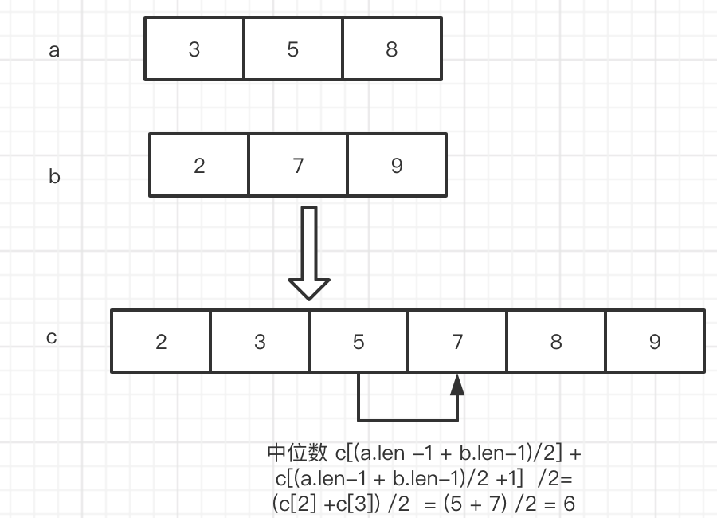那么 由于数组原先就是有序的,我们 可以使用归并 定义2根指针 然后依次 比大小,然后不停的往后取。
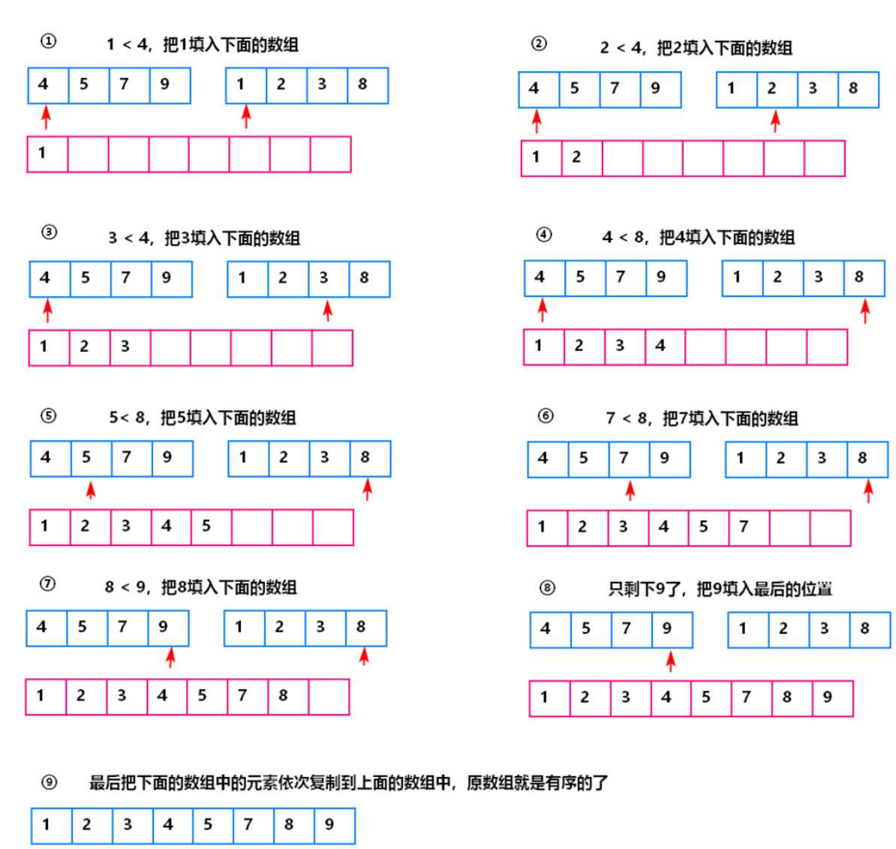pub fn find_median_sorted_arrays(nums1: Vec<i32>, nums2: Vec<i32>) -> f64 { let mut pointer_a = 0; let mut pointer_b = 0; loop { // 这个判断取的是公共长度的 部分 a 如果 长度为 5 b如果长度为 4 那么 这个判断里面 是 前 4个数归并 if pointer_a > nums1.len() || pointer_b > nums2.len() { if nums1[pointer_a] < nums2[pointer_b] { //如果 指针a的值 < 指针b的值 指针 a 往后移动一个位置 println!("{}",nums1[pointer_a]); pointer_a +=1; }else if nums1[pointer_a] > nums2[pointer_b]{ //如果 指针a的值 > 指针b的值 指针 b 往后移动一个位置 println!("{}",nums2[pointer_b]); pointer_b +=1; }else if nums1[pointer_a] == nums2[pointer_b]{//如果两个数 相等 2根指针 都往后移动1个位置 println!("{}",nums1[pointer_b]); pointer_a +=1; pointer_b +=1; } }else if pointer_a < nums1.len(){ //当 b指针的 长度 耗尽 了 我们只需要移动 a 指针就好了 println!("{}",nums1[pointer_a]); pointer_a +=1; }else if pointer_b < nums2.len(){ // 当 a指针的 长度耗尽了 ,接下来 我们只需要移动b 指针了 println!("{}",nums2[pointer_b]); pointer_b +=1; }else{ //上述条件都不满足,跳出循环 break; } } 1 as f64 } fn main() { let mut a1 =vec![1,3,5,12,16]; let mut a2 =vec![2,4,6,7,9]; find_median_sorted_arrays(a1,a2); }
上面的 代码 我们久通过指针 指向了 2个数组,然后比较大小 然后移动指针,代码 比较简单 就是 定义 双指针 比大小 然后 移动指针。 要注意的是 由于2个数组长度不一样,当一个数组长度到头了,那么就移动剩下的数组指针到结束为止。
上面其实就实现了 将 2个有序数组进行归并的过程,实际上我们 没有定义一个数组 来存放 归并好的值,因为不需要这么做 我们直接通过 2根指针的 位置相加 计算出 每个数在 归并后数组的索引,如果 等于2个数组合并后中位数的索引 那么就找到了这个值。
但我们在编码的过程中,我们计算中位数索引的值需要注意,一点：
- 我们对给定的2个数组长度相加是奇数和 偶数 做一下判断,如果是奇数 直接取 最中间的一个数,如果是 偶数要取到 中间的 2个数相加 再 除以 2。
pub fn find_median_sorted_arrays(nums1: Vec<i32>, nums2: Vec<i32>) -> f64 { // 这个判断 是为了 处理一些 比如 [] ,[1] 这样糟糕的数据,偷懒 就直接在这处理掉吧! if (nums1.len() ==1 && nums2.len() == 0) { return nums1[0] as f64; } if(nums1.len() ==0 && nums2.len() == 1) { return nums2[0] as f64; } let mut pointer_a = 0; let mut pointer_b = 0; //flag 用于记录最后一次移动的 是 pointer_a 或者 是 pointer_b 或者都移动了 let mut flag = 0; let mut lastnum =0; loop { // 这个判断取的是公共长度的 部分 a 如果 长度为 5 b如果长度为 4 那么 这个判断里面 是 前 4个数归并 if pointer_a < nums1.len() && pointer_b < nums2.len() { if nums1[pointer_a] < nums2[pointer_b] { //如果 指针a的值 < 指针b的值 指针 a 往后移动一个位置 flag = 0; }else if nums1[pointer_a] > nums2[pointer_b]{ //如果 指针a的值 > 指针b的值 指针 b 往后移动一个位 flag = 1; }else if nums1[pointer_a] == nums2[pointer_b]{//如果两个数 相等 2根指针 都往后移动1个位置 flag = 2; } }else if pointer_a < nums1.len(){ //当 b指针的 长度 耗尽 了 我们只需要移动 a 指针就好了 flag = 0; }else if pointer_b < nums2.len(){ // 当 a指针的 长度耗尽了 ,接下来 我们只需要移动b 指针了 flag = 1; }else{ //上述条件都不满足,跳出循环 break; } //上面的所有代码 主要负责 循环移动a b 的指针,直到数组的末尾,需要 注意的 是 数组 总是有长有短 如果一边的指针 移动到末尾了 剩下的 全部移动 另一边的指针 //如果 指针 指向了 中位数 if ((nums1.len() + nums2.len() -2 ) / 2) + 1 == pointer_a + pointer_b { //如果 数组1 + 数组2 是奇数个 if (nums1.len() + nums2.len()) % 2 != 0 { //处理 指针 a 移动了的情况 if flag == 0{ return nums1[pointer_a] as f64; }else { //如果指针 b 或者 2个指针都移动 的 情况 return nums2[pointer_b] as f64; } }else{//如果 数组1 + 数组2 偶数个 //如果 是 偶数个 我们 需要 记录上一个数 和当前的 数相加 / 2 if flag == 0{ return (nums1[pointer_a] as f64 + lastnum as f64) / 2.00; }else { return (nums2[pointer_b] as f64 + lastnum as f64) / 2.00; } } //处理 pointer_a 和 【pointer_b 相等 都往后 移动 2步,那么 pointer_a + pointer_b == 数组1长度 + 数组2长度 -2 (从0索引开始 所以 -1 -1 = -2) /2 + 1 }else if (nums1.len() + nums2.len() -2 ) / 2 + 1 < pointer_a + pointer_b { break; }else{ //如果 不是中位数 if flag ==0{ lastnum = nums1[pointer_a]; //指针 a 往后移动一步 pointer_a += 1; }else if flag ==1{ lastnum = nums2[pointer_b]; //指针 b 往后移动一步 pointer_b += 1; }else{ lastnum = nums1[pointer_a]; //指针 a b 分别往后移动一步 pointer_a += 1; pointer_b += 1; } } } return lastnum as f64; } fn main() { let mut a1 =vec![1,2]; let mut a2 =vec![3,4]; println!("{}",find_median_sorted_arrays(a1,a2)); }
第一次 执行用了 8ms,后面执行 就变成 4ms了,不知道什么原因。
二分法
在 上面一种方法中,我们定义了 2根指针 从头开始 取计算 中位数对应的数,但实际上 我们可以 直接 用 二分法 每次折半 来缩减 查找的 范围。
假设 给定 2个数组 ,长度 分别为 6 和 5.
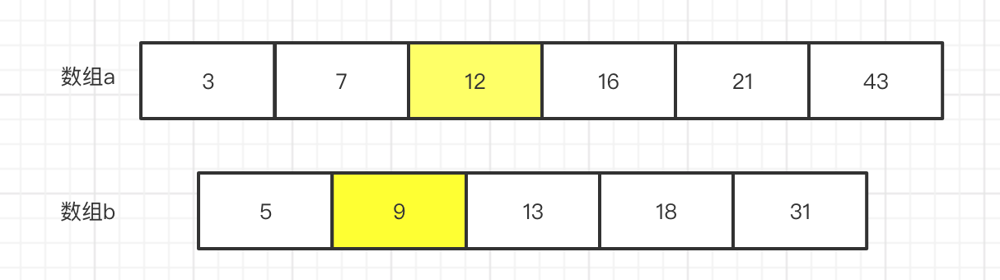让我们 思考一个问题,什么是中位数,假定 我们 在 数组a 和数组b 中找到一个中位数,那么 不考虑 偶数个 中位数 就是 前边 和 后边的长度是一样的。
假设 数组 a 的长度为 m,数组b的长度 为 n
那么 中位数的位置 就是 (m + n + 1) / 2, 那么 意思是 我们只需要找到 一个数,它前面有 (m + n + 1) / 2 -1 个数那么 它不就
是中位数了吗。
如上图,如果我们假设 7 是中位数,那么 怎么石锤 这个证明呢?
只要证明 小于等于 7的 数是否有 (m + n + 1) / 2 -1 个不就好了吗 ?
那问题进一步的 变成 怎么 计算 <=7 的数的个数呢?
那么 首先 数组 a 中 7的索引是 1 那么 我们就说 数组a 中小于等于7的 有一个数,在数组a中找比起小的很容易.
那么 问题又变成了 怎么在 数组b 中找 <=7 的数的个数呢?
那么 逐个搜索不就好了吗,但是 有没有更好的方法呢? 既然给定的 数组b 是有序的那我们 就可以考虑 使用更高效的 搜索方法,对于有序的数组 抖索效率 最高的当然是属 二分搜索啦。
那么 我们可以肉眼看到 数组 b 中,<=7 的只有 1个 那么 加上 数组a 中的 一个 总共 就是 2个数, 12 / 2 -1 = 5 很明显,不符合 。
那么 我们使上帝视角 稍微观察下 就知道 中位数是13 是中位数,
那么 我们还是 证明下吧 13 的 index = 2, 数组 a 中 <= 13 的数 有 3 个,那么 3 + 2 = 5, 前面正好有 (m + n + 1) / 2 -1
个 数那么 它的确是中位数。
总结
根据上面的 证明 我们可以得出:
我们 可以先随机定义一根指针a,指向某个数,然后在另一个数组也定义一根指针b,
然后 我们假设 指针a 为 中位数 然后去指针 b 找 小于等于 a指针的个数,使用二分查找，每次 筛选掉一半,
然后再判定下 指针 a 是否有前 (m + n + 1) / 2 -1 个数 。
如果 a 前面的数 > (m + n + 1) / 2 -1 说明 我们 要把 a 指针 往前 移动
如果 a 前面的数 < (m + n + 1) / 2 -1 说明 我们 要把 a 指针 往后 移动
a指针 我们也每次移动 剩余范围的一半,采取这样的二分法。
这里我们 还要注意 如果 a 数组 里面找不到中位数,那么 我们就需要 直接在 b数组里面找中位数。
另外要注意的是 我们 希望是 在数组 a 里面找到 中位数,那么 要求 数组a的长度 >= 数组b 的长度,所以我们 在一开始判断下谁的长度长 就是数组a 最下数组交换。
用这种方法,要处理很多 边界条件,太烦了 写了 70% 放弃。
找第 k 个数
条件 给定数组 a 长度为 m,数组b 长度 为 n
那么 数组 a 和数组 b 的中位数 为 (m + n + 1) / 2 为什么 + 1 呢? 主要是向上取整floor。如果不加 1 那么就是向下取整。 Floor(1.x) =2 , ceil(1.x) = 1。
二分法介绍
如果给定一个 从小到大的数组,那么怎么快速查找一个数,一般使用二分法。二分法 是不断缩小搜索范围的一种方法。
第一次 搜索范围一半 (m + n + 1) / 2 一半分为 左边一半 和 右边一半
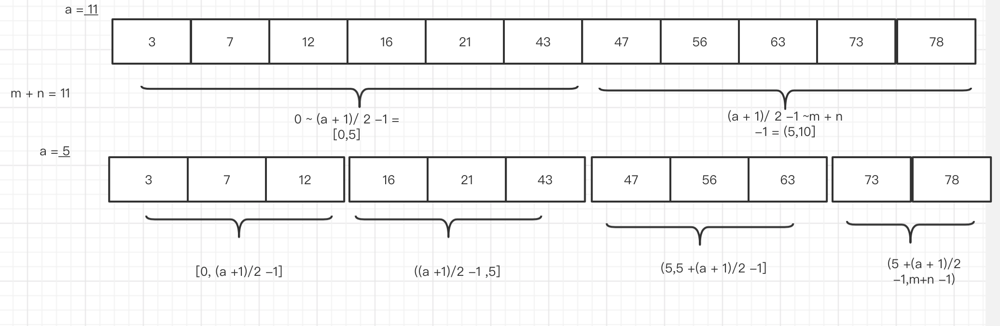
二分法 是 每次都除以 2 这样 然后 收敛在 0点, 5 -> 2 -> 1 -> 0。
我们 如果从给定的数组m 中去取第k个数,那么 它的前 面的 k -1 个数必然是小于等于 第k个数的。
那么 我们如果在 第二数组也找到第 k_ 个数,也是同样的结果,那么当我们 把第 数组 a 的 第k 个数和数组 b 的第k个数作比较,那么 必然有一方 大于或等于 另一方, 假设 数组 a 的 k为k_1 数组b 的 k为 k_2,假设 k_1 >= k_2,那么 我们可以得出 2k -1 个数 不等于 第 2k 个数.
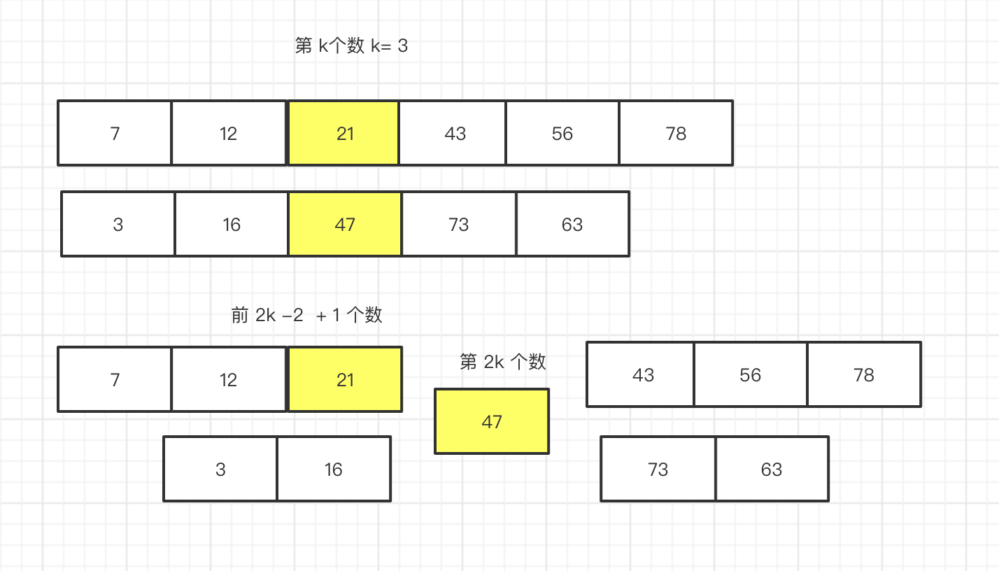
那么 就排除前 2k -1 个数 了, 如果 k_1 要想成为 第 2k 个数,要满足 条件 k_2 的 第 k_2 + 1个数 > 第 k_1个数,
否则的话 第 k 个数。如上图 假设 47 为 第 2k个数,他前面有 2k -1个数比它小。
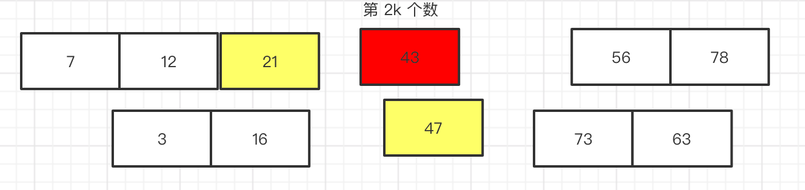如上图 我们可以看到,当数组 b 中 第 k + 1 个数 比 47 小了 那么 k就会变成 第 k + 1 个了,就好像 有人问你 跑过了 倒数第二名 你是第几名一样, 由于 43 比 47小所以 就替换了 47的位置 此时 43 变成了 第 k 位数。
代码实战
光说不练假把式,我们 可以用上面的思维 边完成代码 边继续推理,能边学习边及时得到反馈 也能让你更有兴趣对问题更加深入的研究。
1. 首先 我们 要定义 2k 是多少, 我们 一般 把 2k 取为 中位数 的位置?
假设 2个数组 m 长为 3 n长为 2 ,按照中位数的计算 应该取 (3 + 2 + 1) / 2 = 3
那么 我们可以在 m 里 取 2,那在 n里取到 3 -2 = 1(注意实际索引 从 0开始 要 -1 但是为了方便了解这里 使用从1开始)
但是 如果 m 是个只有为 1的数组 那怎么办呢? 所以 我们在 取值的时候可以采用 将中位数 3/2 = 1 然后我们再判断下,如果 数组索引 比 1大 k_m取 1 比1小 k_m 取数组的长度。
然后k_n + k_m =3 , k_n取剩下部分。
pub fn find_median_sorted_arrays(nums1: Vec<i32>, nums2: Vec<i32>) -> f64{ let mut nums1 = nums1; let mut nums2 = nums2; if nums1.len() > nums2.len(){ let tmp = nums1; nums1 = nums2; nums2 = tmp; } let k_2 = (nums1.len() + nums2.len() + 1) / 2 -1; //k 为小的数 let mut k_m = nums1.len() -1; let mut k_n = 0; let k = k_2 / 2 ; if k_m < k{ k_n = k_2 - k_m -1; }else{ k_m = k; k_n = k_2 - k -1 ; } println!("{},{}",pointer_a +1,pointer_b +1); } fn main() { let m = vec![7,12,21,43,56,78]; let n = vec![3,16,47,73,63]; find_median_sorted_arrays(m,n); }
上面代码 k_2 变量名 就是 2k 个数的索引 也就是中位数索引,由于变量起名规则,下文 我们一致 用第K_2 个数 来替代 第2k 个数
2.如何找到中位数?
有了上面的划分 我们 就要来证明,如何找到中位数的位置呢.
我们知道 数组是从大到小有序的,并且上面的算法 把数组 划分成了这样
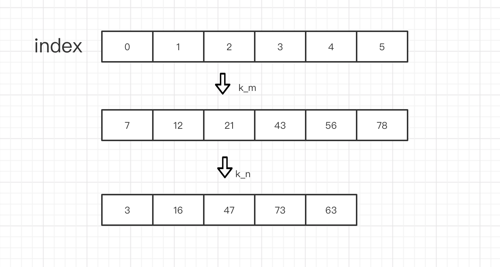那么 我们首先尝试去 比较 k_m 和 k_n 的大小 谁大 我就认为 设就是暂时的第k_2个数,
#![allow(unused_variables)] fn main() { //谁大 谁就是 k_2 个数 if nums1[pointer_a] > nums2[pointer_b]{ println!("{} ",nums1[pointer_a]); }else{ println!("{} ",nums2[pointer_b]); } }
那么 有了k_2 个数,我们 就要到中位数了吗? 其实还有挺长的路要走。
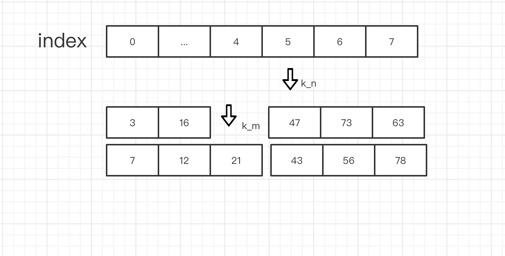现在 呢 47是 第 k_2个数,但是 因为它前面有 k_2 - 1个数,那么想要维持住这种关系,那么 我们就要保证
k_m 和 k_n 后面的数全部 要 大于 47, 由于 已知 是给定数组是升序排列的,就有 k_n + 1 > k_n
那么 k_m 后面的数,就决定这 k_n 是不是 第 k_2 个数的关键。
此时 就会有两种情况：
- k_m + 1 < k_n 如果是 这种情况,那么 k_m + 1 将会插到 k_n 前面,使得 k_n 变成第 k_2 + 1 个数,而 k_m + 1变 成 第 k_2 个数。又 由于 k_m + 1 < k_m + 2 那么,k_m + 1 前面不可能再插入其他数了,所以k_m + 1 就变成了k_2。 当然 在实际编码过程中,我们还要注意 k_m + 1 是否存在。
- k_m + 1 >= k_n 这种情况,k_m + 1 不能插入到k_n 前面所以不会影响 k_n ,所以不需要做什么.
那么 分别讨论了上面2中问题,是不是就能 覆盖了所有问题了呢?
第一种情况 我们 还需要小心一点,如下图:
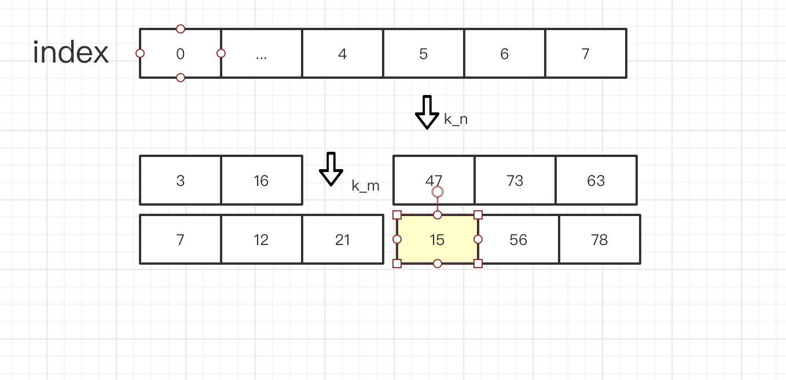如果 k_m + 1 比 k_n小 故而插入到k_n前面 那么 k_m + 1 就一定 是紧挨着 47的吗?如果 k_m + 1 比前面的 某 1个数还小呢?
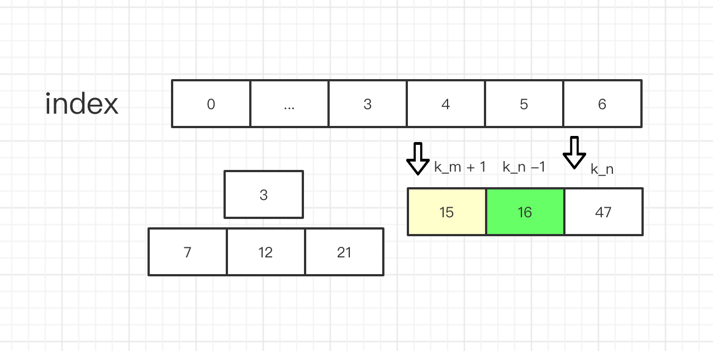
上图,我们可以看到 第 k_2 个数,因为另一组比它更小的数的插入,而导致 第k_2个数位置发生变化。
要想稳定得到 第k_2个数,那么 我们要 另一组数组的 第k_m + 1个数要大于等于 第 k_2个数,这也是最重要的条件
如果小于的话 我们就需要把 k_n 也就是 现在的 第 k_2 个数 往左移动一格,并且 把 k_m 往右移动 这样 就还是能维持 k_m + k_n = k_2。
例子
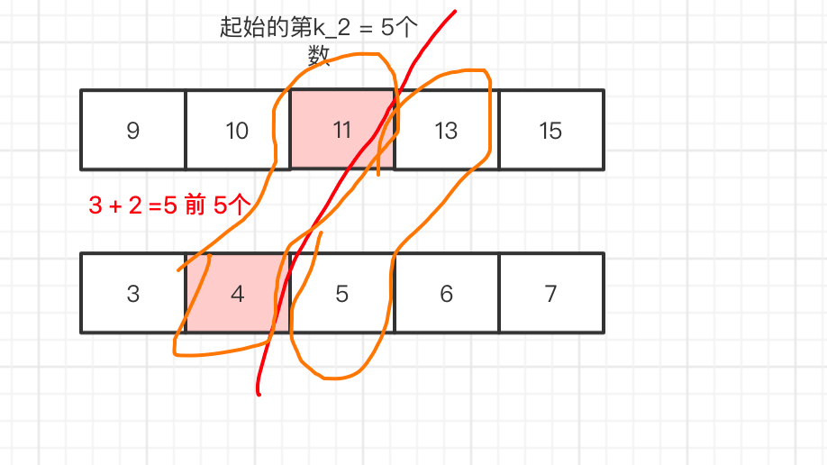我们可以划分为,红线以左指针区域 和 红线的以右指针右边区域,
当我们 求 中位数
如果是 偶数 就是 (max{指针区域} + min{指针右边区域}) /2
如果是 奇数时 max{指针区域} 。
为什么呢 ,因为我们定义了 我们的2个指针中永远有一个 是指向第k_2个数,另一个指向k_2 -1,此时我们假设 k_2 是中位数,那么 k_2 -1 < k_,那么 求 max 就可以找到了。
如果是 奇数情况 我们只要找指针 直接求max 返回就可以。
如果是偶数的情况,那么 给定数组是有序的,假设 k_2 后面那个数 叫 k_2 + 1 那么 k_2 + 2 > k_2 + 1 > k_2,所以 min{ k_2 + 2 , k_2 + 1} 就可以得到 k_2 + 1了。
所以 偶数个 计算中位数就是 (max{指针区域} + min{指针右边区域}) /2
上面我们提到 我们定义了 2根指针指向了,k_m 和k_n 永远有一根是中位数。那么怎么找到 中位数呢?
我们只需要 保证 指针区域 的值 都小于 指针右边区域 其实就可以了.
如果不小于 我们就 一个往左移动指针,另一个往右移动指针,直到找到那么个区域,由于同时移动 一个 + 1 一个 减 1 那么 还是能保持 k_m + k_n = 2k.
但是我们 还要处理,边界的情况,
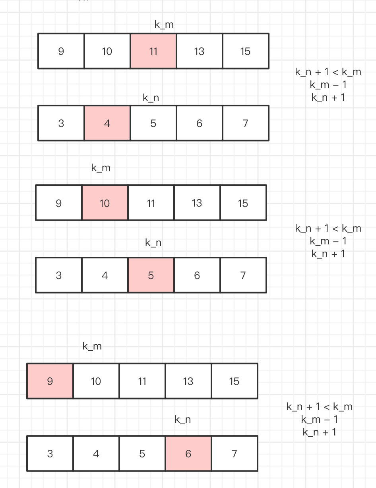 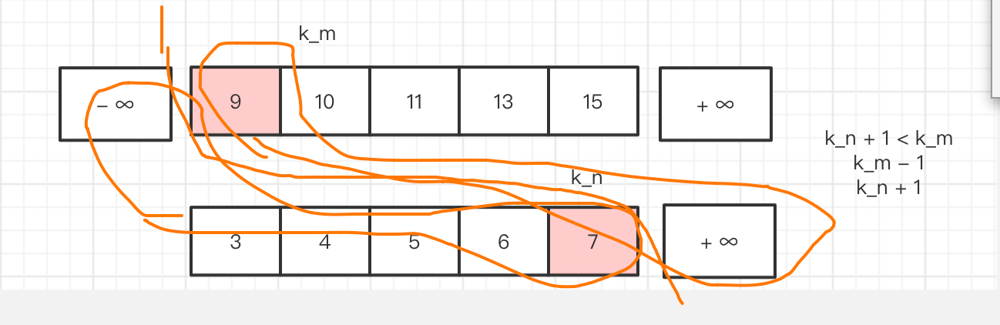为了 处理 边界情况 我们 添加了 一些 不影响,中位数的数字 就是一些比较大的数字 和一些 比较小的数字
#![allow(unused_variables)] fn main() { std::i32::MIN std::i32::MAX }
然后 就算 是边界,如上图 (max{-∞,7} + min{∞,9}) / 2= (7 + 9) / 2 也可以很好的计算了是不是。
为什么 下面那个数组 没有-∞ 实际上 按照我们的思路,一般不会出现 到边界 这种情况,除非什么空数组啊 什么的,但我们 对一些 比较麻烦的情况直接 偷懒 特殊处理。
完整代码:
pub fn find_median_sorted_arrays(nums1: Vec<i32>, nums2: Vec<i32>) -> f64{ //偷懒 处理 都是 1个的情况 let iseve = (nums1.len() + nums2.len()) % 2 == 0; let mut nums1 = nums1; let mut nums2 = nums2; if nums1.len() > nums2.len(){ let tmp = nums1; nums1 = nums2; nums2 = tmp; } // 偷懒 解决数组有长度 一个数组 没长度 if nums1.len() == 0 { if iseve { return (nums2[(nums2.len())/2 -1] as f64 + nums2[(nums2.len() + 1)/2 ] as f64 )/ 2.00; }else{ return nums2[(nums2.len() + 1)/2 -1] as f64 } } let k_2 = (nums1.len() + nums2.len() + 1) / 2 -1; //k 为小的数 let mut k_m = nums1.len() -1; let mut k_n = 0; let k = k_2 / 2 ; if nums1.len() + nums2.len() != 2 { if k_m < k{ k_n = k_2 - k_m -1; }else{ k_m = k; k_n = k_2 - k -1 ; } } //交换数组 if nums1[k_m] < nums2[k_n] { let tmp = nums1; nums1 = nums2; nums2 = tmp; let tmp = k_n; k_n = k_m; k_m = tmp; } //这里 push 几个值 是为了 处理边界的情况 nums1.insert(0,std::i32::MIN); nums2.push(std::i32::MAX); nums1.push(std::i32::MAX); k_m +=1; //以下是 核心代码 上面预处理 没什么技术含量 while k_n + 1 < nums2.len() -1 && nums1[k_m] > nums2[k_n + 1]{ if k_m == 0 { k_n +=1; }else{ k_m -= 1; k_n +=1; } } if iseve { return (max(nums1[k_m],nums2[k_n]) as f64 +min(nums1[k_m +1],nums2[k_n +1]) as f64 )/ 2.00; }else{ return max(nums1[k_m],nums2[k_n]) as f64; } -1.0 } fn main() { let m = vec! [1,2] ; let n = vec! [3,4] ; println!("{}",find_median_sorted_arrays(m,n)); }
Leetcode 第27题 - 移除元素(easy)
给你一个数组 nums 和一个值 val，你需要 原地 移除所有数值等于 val 的元素，并返回移除后数组的新长度。
不要使用额外的数组空间，你必须仅使用 O(1) 额外空间并 原地 修改输入数组。
元素的顺序可以改变。你不需要考虑数组中超出新长度后面的元素。
示例 1:
给定 nums = [3,2,2,3], val = 3,
函数应该返回新的长度 2, 并且 nums 中的前两个元素均为 2。
你不需要考虑数组中超出新长度后面的元素。
示例 2:
给定 nums = [0,1,2,2,3,0,4,2], val = 2,
函数应该返回新的长度 5, 并且 nums 中的前五个元素为 0, 1, 3, 0, 4。
注意这五个元素可为任意顺序。
你不需要考虑数组中超出新长度后面的元素
解题思路
这里 其实很简单 我们 判断元素 是否为 要删除的元素 ,再使用rust 的remove 就好了,但是这里要注意 如果 我们通过索引取访问 到数组,那么当你remove 完了 后 数组里面 元素数 就少了 一个 下一次循环 就要减1, 那么 我们 每次 remove 后都需要计数 一下,然后 把 index 减去 这个计数 得出来的是 我们 删除后下一个元素的位置。
比如 [3,2,2,3] 我们要删除 2
如果 我们第一次去访问 index = 0 访问到 3
第二次访问 index =1 访问到 2 是目标值 remove
当我们 第三次要访问 的时候 index = 2 但是 由素组被更新过了 变成了 [3,2,3] 访问 2 就直接变成了 3 了 跳过了 2
所以 当我们 定义 一个 计数器 每当 remove 时 count+ 1 , 每次访问的索引变成 index - count 这样 第三次访问变成了 1 这样 就解决了 这个问题.
pub fn remove_element(nums: &mut Vec<i32>, val: i32) -> i32 { let mut count:i32 = 0; for i in 0..nums.len(){ if nums[i - count as usize] == val { nums.remove(i - count as usize); count +=1; } } nums.len() as i32 } fn main() { let mut a1 =vec![3]; let mut a2 =vec![3,2,2,3]; println!("{}",remove_element(a2.as_mut(), 2)); println!("{:?}",a2); }
Leetcode 第27题 - strStr() 函数(easy)
实现 strStr() 函数。
给定一个 haystack 字符串和一个 needle 字符串，在 haystack 字符串中找出 needle 字符串出现的第一个位置 (从0开始)。如果不存在，则返回 -1。
示例 1:
输入: haystack = "hello", needle = "ll" 输出: 2
示例 2:
输入: haystack = "aaaaa", needle = "bba" 输出: -1
解题思路
这题可以使用 暴力解法,2层循环 一层 指向 一个字符 内层去逐一 的匹配 字符串。
时间复杂度 是$ O(n^2)$
空间复杂度 $O(1)$
我们 想要尝试另一种做法,KMP算法。
时间复杂度 $O(N)$
空间复杂度 $O(M)$
KMP算法
kmp 算法 代码 非常简洁,紧凑但是 要理解起来还是有一定难度的。
kmp算法分为2步
-
首先要构建 一个 next数组。
-
根据 next 数组直接匹配。
首先 讲这个算法 之前 要明白 普通的双指针为什么 不可以匹配。

我们 可以看到 如果定义 2个指针(索引),从0 开始 指向 2个 数组,不相等 i就往后移,当相等 时 i和 j 都往后移
直到 i 和 j 指向的值不同 那么 就匹配结束。这种思维 是很普遍的 看起来很美好。
如上的数组 如果这么找 的话 , 当 i = 4 处 结束匹配 把 j 重置为 0,i 往后 开始下一轮匹配,这样很明显 后边还剩下
ba 匹配不到 bcba,但是事实上 如果我们忽略掉 i = 1 处的匹配,从 i = 3 处匹配 完全就能匹配的到。我们为了便于讨论 把这个问题先起个名字 叫做 "模式重复错误".
因为 第一次 的匹配导致后面不能完全匹配到字符, 首先 我们思考下 匹配的基本条件至少是开头要一样吧, 那么 也就是说 匹配的字符串 有一个特点，那就是 有和 开头那个字符 一样重复的 字符。
打个比方 abc 我们 可以把
所有的子集 称为 {a,b,c,ab,bc,abc} a模式 b模式 c模式 以此类推。
我们 把 所有 a 开头的 起个昵称 称为 开机模式群 {abcx}
我们 判定 某个字符都是从首字母开始的 也就是说 只要是 "开机模式群" 那么 我们就可以记一次 匹配字符串。
在 abc 中 开机模式群 只有一种组合 ,所以我们只需要 一次判断 。
但如果改成 aba 呢 里面 有2个 a 就有可能 {abax,ax} 就变成了 2种 组合,那么 就要 两次 匹配。
但是当我们 处在 一次匹配模式中,没法中途退出 就会出现 上面的 "模式重复错误" 问题。
那么 解决这个问题,的关键 是 如果我们知道 匹配字符串 包含 几种 "开机模式群" 的组合,那么 我们匹配错误的时候解出 一次匹配模式 然后切换到 另一种 "开机模式群" 状态 就可以 解决这个问题。
那怎么 切换呢,其实 {ax} 是 {abax}的子集,它们 之间 索引相差 值就好了,PMT表其实 就是计算 每个状态 切换 索引之间切相差的值。
而 next 表就是类似这样一个东西 ,让你从 "开机模式群"一种状态 切换到另一种 "开机模式群" 状态.
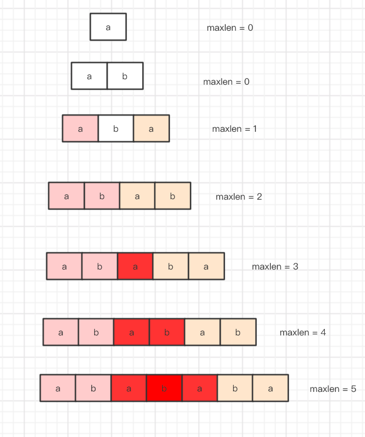 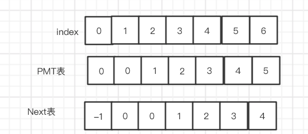参考资料：https://www.bilibili.com/video/BV1Ys411d7yh?t=710
use std::borrow::Borrow; pub fn get_next(needle: &String) -> Vec<i32> { let mut tmpvec = Vec::with_capacity(needle.len()); tmpvec.push(0); let mut j = 0; let mut i = 1; for _ in 1..needle.len() { if needle.as_bytes()[i] != needle.as_bytes()[j] { while needle.as_bytes()[i] != needle.as_bytes()[j] && j >= 1 { j = tmpvec[j - 1]; } } if needle.as_bytes()[i] == needle.as_bytes()[j] { j += 1; } tmpvec.push(j); i += 1; } let mut next: Vec<i32> = Vec::with_capacity(needle.len()); next.push(-1); for i in 0..tmpvec.len() - 1 { next.push(tmpvec[i] as i32); } next } pub fn str_str(haystack: String, needle: String) -> i32 { if needle.len() == 0 { return 0; } let next = get_next(needle.borrow()); let mut i = 0; let mut j = 0; while i < haystack.len() { if haystack.as_bytes()[i] == needle.as_bytes()[j] { j += 1; if j == needle.len() { return (i - j + 1) as i32; } i += 1; } else { if j != 0 { j = next[j] as usize; }else{ i += 1; } } } return -1; } fn main() { let str1 = String::from("mississippi"); let str2 = String::from("issip"); println!("{}", str_str(str1, str2)); }
Leetcode 第19题 - 删除链表的倒数第N个节点(easy)
给定一个链表，删除链表的倒数第 n 个节点，并且返回链表的头结点。
示例：
给定一个链表: 1->2->3->4->5, 和 n = 2.
当删除了倒数第二个节点后，链表变为 1->2->3->5.
说明：
给定的 n 保证是有效的。
进阶：
你能尝试使用一趟扫描实现吗？
解题思路
这道题的难点是怎么找到倒数 第 n个节点,就好像 你如果不把每一颗盒子里面的糖都吃一遍,那么 你就没法确切的知道 有多少颗 酸的多少颗是甜的。 我们要知道 倒数第n个数 那必须要知道 最后一个数,才能相对的确定第 倒数第 n 个数。
那么 一种可行方法是 先遍历一遍链表 计算出链表有多少个值,然后可以确定 最后第 n个数的位置 其中一种方案 是 我们递归调用 然后从后向前回溯,就能找到 这也是 rust 里面相对便于实现的一种方法。
在rust 里面 操作链表 比较麻烦,我们 通常用 take() 来吧当前链表 拿到手,take 会把 当前链表的 替换为为nil 然后我们就能获取链表的所有权了。
递归栈 回溯
我们 先递归到底,然后到底之后给定的 n 就可以 减去 1,这样 从底部开始 减,那么 减到 第 n 个就是 0了,然后 我们 直接返回向上返回 它的 next 而不返回当前节点,这样就可以实现删除啦。
要对 n 操作 所以我们单独写一个函数,把 n 改成引用类型。
use std::borrow::BorrowMut; impl Solution { pub fn remove_nth_from_end(head: Option<Box<ListNode>>, n: i32) -> Option<Box<ListNode>> { let mut n = n; Solution::remove_nth_from_end_recursion(head,n.borrow_mut()) } pub fn remove_nth_from_end_recursion(head: Option<Box<ListNode>>, n: &mut i32 ) -> Option<Box<ListNode>> { let mut linlist: Option<Box<ListNode>> = head; match linlist.take() { None => {None}, Some(mut x) => { // 递归栈 let next = Solution::remove_nth_from_end_recursion(x.next.take(),n); //上面 会递归到底 然后我们在这每次-1 来计算倒数n个 *n -=1; println!("{}",*n); //如果 当前节点是倒数第 n 个,那么 我们 返回这个节点的next 节点 跳过当前节点,相当于删除了当前节点 if *n == 0 { return next ; }else{ //否则一般情况 把 next 和 当前节点 链接在一起返回 x.next = next; return Some(x); } }, } } }
Leetcode 第19题 - 删除排序数组中的重复项
给定一个排序数组，你需要在 原地 删除重复出现的元素，使得每个元素只出现一次，返回移除后数组的新长度。
不要使用额外的数组空间，你必须在 原地 修改输入数组 并在使用 O(1) 额外空间的条件下完成。
示例 1:
给定数组 nums = [1,1,2],
函数应该返回新的长度 2, 并且原数组 nums 的前两个元素被修改为 1, 2。
你不需要考虑数组中超出新长度后面的元素。
示例 2:
给定 nums = [0,0,1,1,1,2,2,3,3,4],
函数应该返回新的长度 5, 并且原数组 nums 的前五个元素被修改为 0, 1, 2, 3, 4。
你不需要考虑数组中超出新长度后面的元素。
说明:
为什么返回数值是整数，但输出的答案是数组呢?
请注意，输入数组是以「引用」方式传递的，这意味着在函数里修改输入数组对于调用者是可见的。
你可以想象内部操作如下:
// nums 是以“引用”方式传递的。也就是说，不对实参做任何拷贝 int len = removeDuplicates(nums);
// 在函数里修改输入数组对于调用者是可见的。 // 根据你的函数返回的长度, 它会打印出数组中该长度范围内的所有元素。 for (int i = 0; i < len; i++) { print(nums[i]); }
解题思路
如果普通的方法 我们就,new 一个 新的数组,但是题目 有要求 我们 不能有额外的空间复杂度,那么 我们只能边 遍历 边修改.有了这个想法 我们得思考,那么 要一边 遍历 一边改,那么 首先想到 可以有2根指针,一根在前一根在后修改，
那么 指针 a =0 指针 b =1。
这让我想到了 一个场景,盗墓者在 墓道里走陷阱,同伴在前 它在后面, 然后让同伴 去踩陷阱 索引 + 1,
然后如果 同伴发现 那个是陷阱,那么 他就直接 不走这一步走到 而是沿着同伴成功的那一阁。
我们 可以类似 把重复的 想象成陷阱,那么 假设 j 是探路的,j 先走一步,如果发现没重复 那么 i 及时跟上.如果重复了 i 先 不走,等j + 1步 继续去探路,不重复了咱继续走,并把下一步改成 j所在那一步的样子。
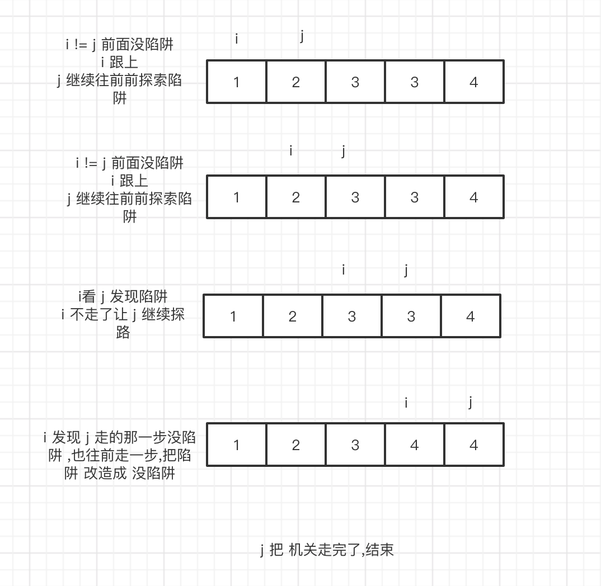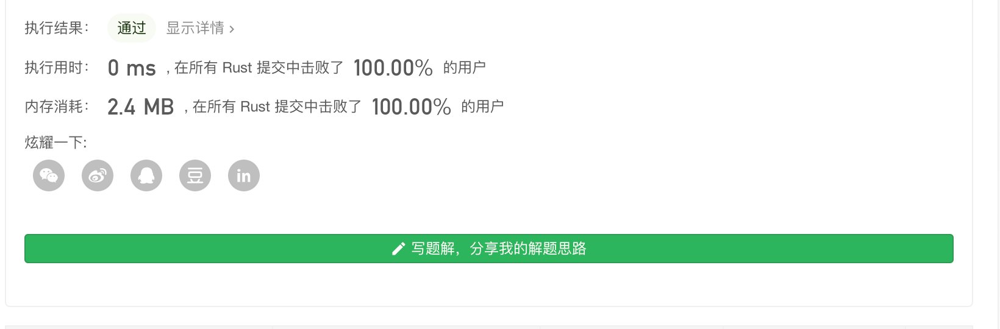#![allow(unused_variables)] fn main() { pub fn remove_duplicates(nums: &mut Vec<i32>) -> i32 { if nums.len() == 0 { return 0;} let mut i =0; for j in 1..nums.len(){ // 没陷阱,就跟着 j if nums[j] != nums[i] { i+=1; nums[i] = nums[j]; } } return (i + 1) as i32; } }
Leetcode 第108题 - 将有序数组转换为二叉搜索树
将一个按照升序排列的有序数组，转换为一棵高度平衡二叉搜索树。
本题中，一个高度平衡二叉树是指一个二叉树每个节点 的左右两个子树的高度差的绝对值不超过 1。
示例:
给定有序数组: [-10,-3,0,5,9],
一个可能的答案是：[0,-3,9,-10,null,5]，它可以表示下面这个高度平衡二叉搜索树：
0 / \-3 9 / / -10 5
解题思路
这道题 我们要注意,给定的是一个有序数组和 高度差 不超过 2,如果 直接采用 普通的平衡二叉树的方式,那么就会变成一个链表,所以 我们采用递归 + 二分法 把 大的放左边 小的放 右边
举个例子 我们把问题规模缩小来思考,如果一个数组 只有 2个数,我们 把 它 除以 2 然后 把左边一个 小的放在左边,右边放大的。
#![allow(unused_variables)] fn main() { impl Solution { pub fn sorted_array_to_bst(nums: Vec<i32>) -> Option<Rc<RefCell<TreeNode>>> { if nums.is_empty() { None } else { help(&nums, 0, nums.len()) } } } fn help(nums: &Vec<i32>, start: usize, end: usize) -> Option<Rc<RefCell<TreeNode>>> { if start >= end { None } else { let mid = (start + end) / 2; let node = Rc::new(RefCell::new(TreeNode::new(nums[mid]))); node.borrow_mut().left = help(nums, start, mid); node.borrow_mut().right = help(nums, mid + 1, end); Some(node) } } }
Leetcode 第32题 最长有效括号
给定一个只包含 '(' 和 ')' 的字符串，找出最长的包含有效括号的子串的长度。
示例 1:
输入: "(()" 输出: 2 解释: 最长有效括号子串为 "()"
示例 2:
输入: ")()())" 输出: 4 解释: 最长有效括号子串为 "()()"
解题思
通过栈的特性。
#![allow(unused_variables)] fn main() { pub fn longest_valid_parentheses(s: String) -> i32 { let mut stack:Vec<i32>=Vec::with_capacity(100); let mut carry=-1; s.bytes().enumerate().fold(0,|s,(i,x)| if x==b'('{ stack.push(carry); carry=i as i32; s }else if let Some(z)=stack.pop(){ carry=z; s.max(i as i32-z) }else{ carry=i as i32;s } ) } }
Leetcode 第70题 爬楼梯
假设你正在爬楼梯。需要 n 阶你才能到达楼顶。
每次你可以爬 1 或 2 个台阶。你有多少种不同的方法可以爬到楼顶呢？
**注意：**给定 n 是一个正整数。
示例 1：
输入： 2 输出： 2 解释： 有两种方法可以爬到楼顶。
- 1 阶 + 1 阶
- 2 阶
示例 2：
输入： 3 输出： 3 解释： 有三种方法可以爬到楼顶。
- 1 阶 + 1 阶 + 1 阶
- 1 阶 + 2 阶
- 2 阶 + 1 阶
解题思路
爬楼梯 就是进店的斐波那契数的只是字面上换了换了个皮肤,把 生兔子 换成了 爬楼梯。斐波那契数 在物理学上 和自然里 都有应用。
我们都知道斐波那契函数 是 1 1 2 3 5 8 13
斐波那契 函数 前 2个 定义为 1 和 1
第三个 开始,则是为前 2个数之和 a[n] = a[n-1] + a[n-2]
递归实现
那么 再回到爬楼梯的问题上来,我们 爬楼梯
如果要爬 0 步 楼梯 有 1一种选择,那就是不动 我们可以理解为 空集 {}
如果要爬 1步楼梯 我们还是 一种方法 走一步 我们可以理解为 只有一步 {1}
| 爬楼梯 | 方式(爬n-1级 + 1级 或 爬 n-2级 + 2 级) |
|---|---|
| 爬 n = 0 级 | {{}} |
| 爬 n = 1 级 | {{1}} |
| 爬 n = 2 级 | 爬1级 + 1级 = {{1} +{1}} = {1,1} | 爬0级 + 2级 = {} + 2 ={2} => {{1,2},{2}} |
| 爬 n = 3 级 | 爬2级 + 1级 = {{1,2},{2}} + 1 = {1,2,1},{2,1} | 爬1级 + 2级 = {1} + 2 = {1,2} => {{1,2,1},{2,1},{1,2}} |
| 爬 n = 4 级 | 爬 3级 + 1级 = {{1,2,1},{2,1},{1,2}} + 1 = {{1,2,1,1},{2,1,1},{1,2,1}} | 爬2级 + 2级 = {{1,2},{2}} + 2 = {{1,2,2},{2,2}} |
| 爬 n 级 | 爬 n -1级 + 1级 | 爬 n - 2 级 + 2级 |
从上面表格 我们可以总结出 这么个公式：f(n*)=f(n−1)+*f(n−2)
pub fn climb_stairs(n: i32) -> i32 { climb_stairs_memo(n) } pub fn climb_stairs_memo(n: i32) -> i32 { // 爬0步 1种方法 if n == 0 { return 1;} // 爬 1步 一种方法 if n == 1 {return 1 ;} //f(n)=f(n−1)+f(n−2) return climb_stairs_memo(n -1) + climb_stairs_memo(n - 2); } fn main() { println!("{}",climb_stairs(20)); }
要确定 n 就要 确定 n的 前2项,如果 要求n阶台阶 的走法,那么 2^n级别。但是 如下图 每次计算包含重复的计算,

时间复杂度：O(n^2)
空间复杂度：O(1)

就像上面分析的,由于包含很多重复计算,导致超出了时间复杂度。
那么我们想要 优化的思路是 可以 用空间复杂度换 时间复杂度,我们可以把 所有计算记忆下来,如果遇到相同的计算直接从数组中返回值，这样 就可以大大 减少不必要的重复运算。
pub fn climb_stairs(n: i32) -> i32 { //初始化记忆 数组 为 -1 let mut memory:Vec<i32> = (0..n+1).map(|x| -1).collect(); memory[0] = 1; memory[1] = 1; climb_stairs_memo(n,memory.borrow_mut()) } pub fn climb_stairs_memo(n: i32,memory:&mut Vec<i32>) -> i32 { if memory[n as usize] != -1 { return memory[n as usize] } let res = climb_stairs_memo(n -1,memory) + climb_stairs_memo(n - 2,memory); //保存数组 memory[n as usize] = res; res } fn main() { println!("{}",climb_stairs(20)); }

动态规划思想
上面的 递归在改进后,最后我们使用一个数组去记录每个 计算过的值,这就是动态规划的思想了,一个问题 分解成 跟小规模的子问题 找到每个子问题 的最优解 保存起来 合在一起就是 这个问题的最优解,就是动态规划的思想了。
pub fn climb_stairs(n: i32) -> i32 { let mut arr = Vec::new(); arr.push(1); arr.push(1); for i in 2..(n + 1) as usize{ arr.push(arr[i-1] + arr[i-2]); } //返回 return arr[n as usize]; } fn main() { println!("{}",climb_stairs(20)); }

我们使用了一个 O(n) 的数组存放了数据,并且 使用了 一次循环,得出：
空间复杂度： O(n)
时间复杂度： O(n)
优化动态规划
在这提中,我们计算 n 值 需要 n -1 和 n -2 的值,所以完全没必要 使用一个数组,所以可以 直接使用2各变量替代。
将 空间复杂度降到 O(1)
pub fn climb_stairs(n: i32) -> i32 { let mut n_2 = 0; let mut n_1 = 1; for i in 0..n as usize { let x = n_2; n_2 = n_1; n_1 = n_1 + x; } return n_1; } fn main() { println!("{}",climb_stairs(20)); }

Leetcode 第120题 三角形最小路径和
给定一个三角形，找出自顶向下的最小路径和。每一步只能移动到下一行中相邻的结点上。
相邻的结点 在这里指的是 下标 与 上一层结点下标 相同或者等于 上一层结点下标 + 1 的两个结点。
例如，给定三角形：
[ [2], [3,4], [6,5,7], [4,1,8,3] ]
自顶向下的最小路径和为 11（即，2 + 3 + 5 + 1 = 11）。
说明：
如果你可以只使用 O(n) 的额外空间（n 为三角形的总行数）来解决这个问题，那么你的算法会很加分。
解题思路
首先 题目说了自上而下,然后只能往相邻的元素走, 相邻 就是 索引 一样 或者 索引 + 1, 所以 它的next 就是它下一层 的 索引和当前一样 或者索引 +1。
理论上 要找到 最小的路径和,我们要对所有可能要找的路径 进行计算然后取最小的。
动态规划
这题可以用动态规划的思想,一上来如果没有方向的话,我们 可以找一个小的子问题去解决它,也许写着写着 就有灵感了。那么 我们先尝试着看看 怎么找下一个相邻节点。
pub fn minimum_total(triangle: Vec<Vec<i32>>) -> i32 { let floor = triangle.len() -1; // triangle.len() -1 最后一层没有下一个节点 不需要找 for i in 0..triangle.len() -1{ for j in 0..triangle[i].len(){ if j + 1 < triangle[i + 1].len() { print!(" | {} next {} {}",triangle[i][j],triangle[i + 1][j],triangle[i + 1][j +1]); }else{ print!("{} next {} ",triangle[i][j],triangle[i + 1][j]); } } println!(); } 1 } fn main() { let angle:Vec<Vec<i32>> = vec![ vec![2], vec![3,4], vec![6,5,7], vec![4,1,8,3]]; minimum_total(angle); }
我们找到了,每一个数的下一个相邻节点,除了最后一层 没有下一个相邻节点,有了 相邻节点 我们就可以计算 当前 节点 到相邻节点的和了,有了这个基础 我们 只需要 把 每一步 和上一步的 值 相加 就可以得出答案了。
我的思路是 定义一个lastsummary 用来记录 上一层的信息。
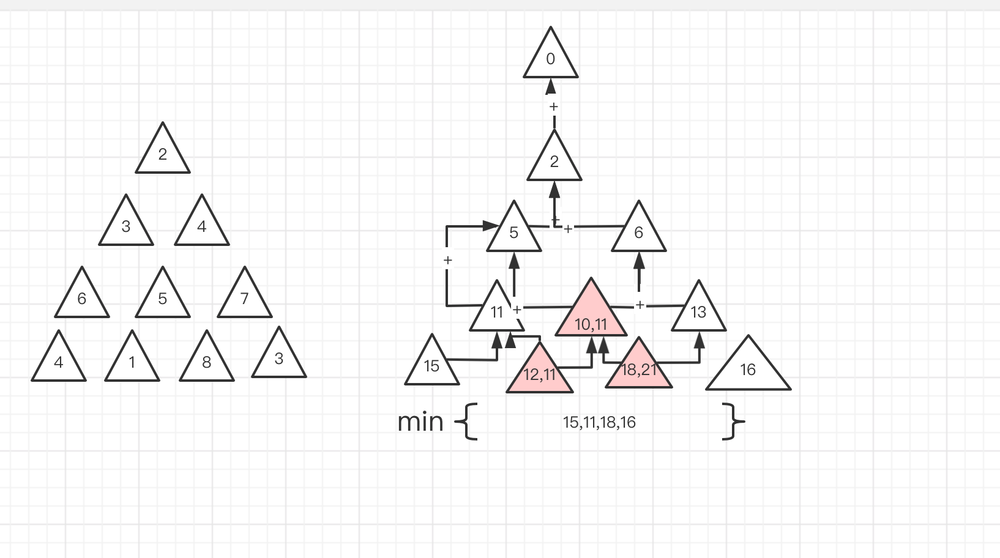如上图,每一个节点 是上一个节点之和, 由于只能往右,所以我们知道每一个节点的上一个节点 必然是 自身的index 或者 index-1 ,那么 我们一开始 使用一个 lastsummary 里面包含一个 0。
那么 第一层 2 + 0 =2 lastsummary =[2]
第二层 3 + 2 = 5 、4 + 2 = 6 lastsummary = [5,6]
我们是通过 当前index 和当前 index -1 索引 的 上一层的 lastsummary,如果 得出2个值,如第三层 10 和 11 ,它们其实所处的位置都是一样的 所以 2者我们取其中最小值,就可以了。
use std::cmp::{max, min}; pub fn minimum_total(triangle: Vec<Vec<i32>>) -> i32 { if triangle.len() == 0{ return 0;} let mut sum = vec![0]; for i in 0..triangle.len(){ let mut floor = vec![]; for j in 0..triangle[i].len(){ if j < 1 { floor.push(sum[j] + triangle[i][j]); }else if( j == triangle[i].len() -1 ){ floor.push(sum[j -1] + triangle[i][j]); } else { floor.push(min(sum[j-1] + triangle[i][j],sum[j] + triangle[i][j])); } } sum = floor; } *sum.iter().min().unwrap() } fn main() { let angle:Vec<Vec<i32>> = vec![ vec![-1], vec![2,3], vec![1,-1,-3]]; println!("{}",minimum_total(angle)); }
算法复杂度：O(n)
空间复杂度：O(n)
Leetcode 第198题. 打家劫舍
你是一个专业的小偷，计划偷窃沿街的房屋。每间房内都藏有一定的现金，影响你偷窃的唯一制约因素就是相邻的房屋装有相互连通的防盗系统，如果两间相邻的房屋在同一晚上被小偷闯入，系统会自动报警。
给定一个代表每个房屋存放金额的非负整数数组，计算你 不触动警报装置的情况下 ，一夜之内能够偷窃到的最高金额。
示例 1：
输入：[1,2,3,1] 输出：4 解释：偷窃 1 号房屋 (金额 = 1) ，然后偷窃 3 号房屋 (金额 = 3)。 偷窃到的最高金额 = 1 + 3 = 4 。
示例 2：
输入：[2,7,9,3,1] 输出：12 解释：偷窃 1 号房屋 (金额 = 2), 偷窃 3 号房屋 (金额 = 9)，接着偷窃 5 号房屋 (金额 = 1)。 偷窃到的最高金额 = 2 + 9 + 1 = 12 。
tag
动态规划
解题思路
这道 题目 和 Leetcode 第70题 - [爬楼梯] 类似,根据题目的定义,我们 只能找相邻元素.
你偷 了 第一个房子 那么要偷下一个房子的范围 [3,n-1]
假设 你偷了第二间房子 那么要偷的下一房子 范围为 [4,n-1]
以此类推 你偷了第m间房子 那么要偷的下一间房子的范围为[m+2,n-1],
考虑 当偷到 第m间 最大情况为 下一间 是最后一间
另 m + 2 = n -1
得 m = n -3
所以 当 m 为 n-3 时,小偷要偷的下一间房子为 n -1为最后一间,在这之后 小偷去偷 n -2 n-1 就没有符合条件的下一间要偷的房子了.所以只能偷一间。
值的注意的一点是,在计算范围时 如 [3,n-1] ,[4,n-1] 把他们做一下交集就会有公共的部分,每次都去重新计算 会花费大量时间,所以我们就要 把 [m,n-1] 区间的结果 记录起来。
所以 可以得出子问题 ：
v(m) = max{f(m) + v(m+2)}
v(m) 代表第 取第 m 个元素时,再剩下的 m + 2 个 取一个房子取到的最大金额。
#![allow(unused_variables)] fn main() { use std::borrow::{Borrow, BorrowMut}; use std::cmp::{max, min}; impl Solution { pub fn rob(nums: Vec<i32>) -> i32 { let mut memory:Vec<i32> = (0..nums.len()).map(|x| -1).collect(); helper(nums.as_ref(),0,memory.borrow_mut()) } } pub fn helper(nums: &Vec<i32>,index:usize,memory: &mut Vec<i32>)-> i32{ if index >= nums.len(){ return 0; } if memory[index] != -1{ return memory[index] } let mut res =0; for i in index..nums.len(){ res = max(res ,nums[i] + helper(nums,i + 2,memory)); } memory[index] = res; res } }
Leetcode 第155题 最小栈
设计一个支持 push ，pop ，top 操作，并能在常数时间内检索到最小元素的栈。
push(x) —— 将元素 x 推入栈中。 pop() —— 删除栈顶的元素。 top() —— 获取栈顶元素。 getMin() —— 检索栈中的最小元素。
示例:
输入： ["MinStack","push","push","push","getMin","pop","top","getMin"] [[],[-2],[0],[-3],[],[],[],[]]
输出： [null,null,null,null,-3,null,0,-2]
解释： MinStack minStack = new MinStack(); minStack.push(-2); minStack.push(0); minStack.push(-3); minStack.getMin(); --> 返回 -3. minStack.pop(); minStack.top(); --> 返回 0. minStack.getMin(); --> 返回 -2.
提示：
pop、top和getMin操作总是在 非空栈 上调用
解题思路
这道题目主要考察数据结构,实现起来也很简单 我们定义一个额外的栈 存放最小值,比较下 比辅助栈内元素小的话 就入栈。
入栈 3 | | | | | | | | |3| |3| stack minStack
入栈 5 ， 5 大于 minStack 栈顶，不处理 | | | | | 5 | | | |3| |3| stack minStack
入栈 2 ，此时右边的 minStack 栈顶就保存了当前最小值 2 | 2 | | | | 5 | | 2 | |3| |3| stack minStack
出栈 2，此时右边的 minStack 栈顶就保存了当前最小值 3 | | | | | 5 | | | |3| |3| stack minStack
出栈 5，右边 minStack 不处理 | | | | | | | | |3| |3| stack minStack
出栈 3 | | | | | | | | |_ | | _| stack minStack
这道题可以帮助我们 熟悉如何用 Rust 栈 数据结构我们用Vec 数组来存储栈元素。
struct MinStack { stack:Vec<i32>, minstack:Vec<i32>, } /** * `&self` means the method takes an immutable reference. * If you need a mutable reference, change it to `&mut self` instead. */ impl MinStack { /** initialize your data structure here. */ fn new() -> Self { MinStack { stack: vec![], minstack: vec![], } } fn push(&mut self, x: i32) { self.stack.push(x); if self.minstack.len() == 0 || x <= self.get_min(){ self.minstack.push(x) } } fn pop(&mut self) { if self.stack[self.stack.len()-1] == self.minstack[self.minstack.len()-1] { self.minstack.remove(self.minstack.len()-1); } self.stack.remove(self.stack.len()-1); } fn top(&self) -> i32 { self.stack[self.stack.len()-1] } fn get_min(&self) -> i32 { if self.minstack.len() ==0 { return 0;} self.minstack[self.minstack.len()-1] } }